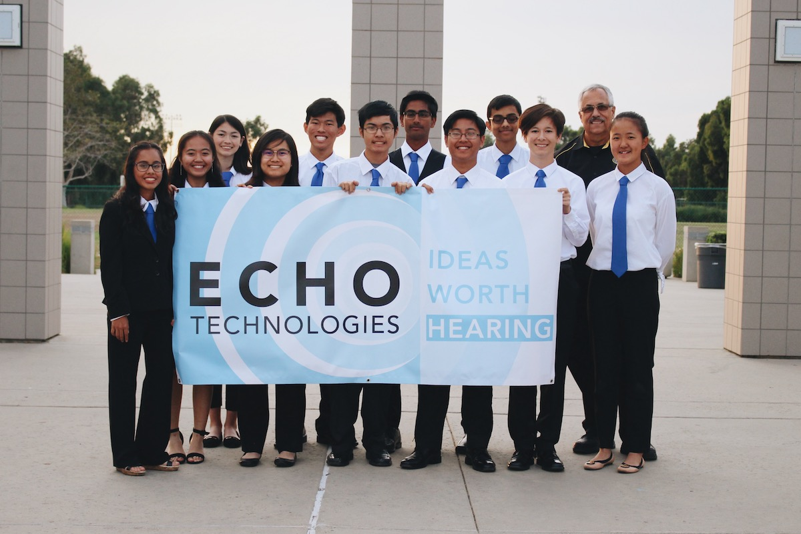

<!DOCTYPE html><html><head><title>Echo Techologies</title><meta name="viewport" content="width=device-width, initial-scale=1"><link href="bundle.css" rel="stylesheet"></head></html><body><header><ul id="nav"><a href="/"><div id="logo-text"><span class="title">ECHO</span><span id="blurb">Technologies</span></div></a><div id="links"><li><a href="/about.html"><h6>About</h6></a></li><li><a href="/donate.html"><h6>Donate</h6></a></li><li><a href="/outreach.html"><h6>Outreach</h6></a></li><li><a href="/interns.html"><h6>Interns</h6></a></li></div><i class="mdi mdi-menu" id="sidenav-trigger"></i></ul><ul id="sidenav"><i class="mdi mdi-close" id="close"></i><div id="links"><li><a href="/"><h6>Home</h6></a></li><li><a href="/about.html"><h6>About</h6></a></li><li><a href="/donate.html"><h6>Donate</h6></a></li><li><a href="/outreach.html"><h6>Outreach</h6></a></li><li><a href="/interns.html"><h6>Interns</h6></a></li></div></ul><div id="backdrop"></div><div id="loader"><div></div><div></div></div></header><main><div class="section" id="interns"><div class="center"><h2 class="title">Our Interns</h2><p>Since 2015, the internship program has been a medium in which underclassmen can experience on being in EDD without being enrolled in the class. The interns have the opportunity to shadow and help the seniors. For example, the interns might help us wire the robot. But more importantly, they have their own part in the mission. Not only does this help the interns acquire soft skills and technical skills from the team, it also paves the way for their success as seniors. The whole point of the internship program is to, in a sense, train the underclassmen to be as good - or even better - than us.</p><p>This year, interns play a key role in our mission. Without them, the Megalodon cannot complete its tasks. The company intern team, also known as Ripple Technologies, is responsible for the design and development of a Remotely Operated Vehicle code named “Remora”. Some of the constraints of the Remora are the following: it must be completely waterproof and lightweight, must be able to locate the wreckage site, must provide a beacon for the Megalodon, identify and retrieve the nuclear items.</p></div></div></main><footer class="section"><div id="logo-text"><h4 class="title">ECHO</h4><h4 id="blurb">Technologies</h4></div><div class="column"><h5>Contact</h5><div class="mdi-set"><a href='ma&#105;lto&#58;&#101;cho%&#55;4e&#99;%6&#56;&#37;6E%&#54;F%&#54;&#67;ogy201%39&#64;g&#37;6D&#97;&#105;&#37;6C&#46;com'><i class="mdi mdi-email"></i></a></div></div><div class="column"><h5>Follow Us</h5><div class="mdi-set" id="icons"><a href="https://www.instagram.com/echo.technologies/" target="_blank"><i class="mdi mdi-instagram"></i></a><a href="https://www.linkedin.com/in/echo-technology-66011616b/" target="_blank"><i class="mdi mdi-linkedin"></i></a><!--<i class="mdi mdi-facebook-box"></i>
<i class="mdi mdi-youtube"></i>--></div></div></footer><script src="https://code.jquery.com/jquery-2.2.4.min.js" integrity="sha256-BbhdlvQf/xTY9gja0Dq3HiwQF8LaCRTXxZKRutelT44=" crossorigin="anonymous"></script><script src="https://cdn.jsdelivr.net/npm/legit-ripple@1.1.0/dist/ripple.min.js" integrity="sha256-kpZ0Yzm1lhJVqvZj/SzmB8y/rTjGiPac2ufSxqIBfUk=" crossorigin="anonymous"></script><script src="https://cdnjs.cloudflare.com/ajax/libs/Chart.js/2.7.3/Chart.min.js" integrity="sha256-oSgtFCCmHWRPQ/JmR4OoZ3Xke1Pw4v50uh6pLcu+fIc=" crossorigin="anonymous"></script><script type="text/javascript" src="bundle.js"></script></body>